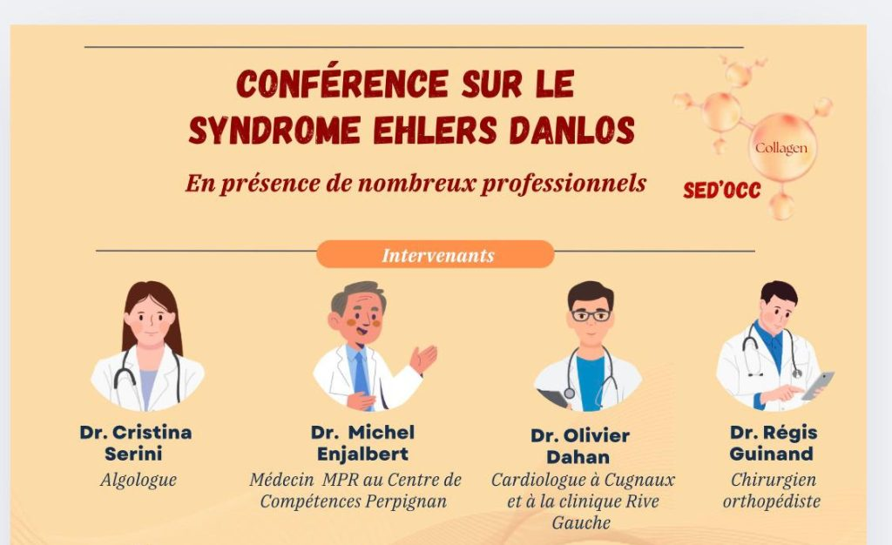

3 novembre 2025

L'association SED'OCC a le plaisir de vous inviter à une conférence consacrée au Syndrome d'Ehlers-Danlos, en présence de nombreux professionnels de santé spécialisés :
- Dr Cristina Serini — Algologue
- Dr Michel Enjalbert — Médecin MPR, Centre de Compétences Perpignan
- Dr Olivier Dahan — Cardiologue (Cugnaux / Clinique Rive Gauche)
- Dr Régis Guinand — Chirurgien orthopédiste
- Mr Jean Michel Caire — Institut de Formation en ergothérapie de Toulouse
- Dr William Heurtaux — Pneumologue, Clinique des Cèdres
- Dr Catherine Leblond — Médecin MPR, Centre de Compétences Perpignan
- Sébastien Travers — Kinésithérapeute
- Avec la participation de Maladies Rares Occitanie
Jeudi 4 décembre 2025
Salle Osète, 6 rue du Lieutenant Colonel Pélissier, 31000 Toulouse
Ouverture des portes à 18h00
Début de la conférence à 19h.
Métro Capitole ou Jean Jaurès
Parking Saint Georges (100 m)
Ouverture de la conférence par Patricia Bez, adjointe au Maire.
Inscription obligatoire (présentiel ou visioconférence) via le lien ci-dessous.
Merci de préciser lors de l'inscription si vous souhaitez participer en présentiel ou en visioconférence. Pour les participants en visioconférence, le lien de connexion sera envoyé par e-mail avant l'événement.